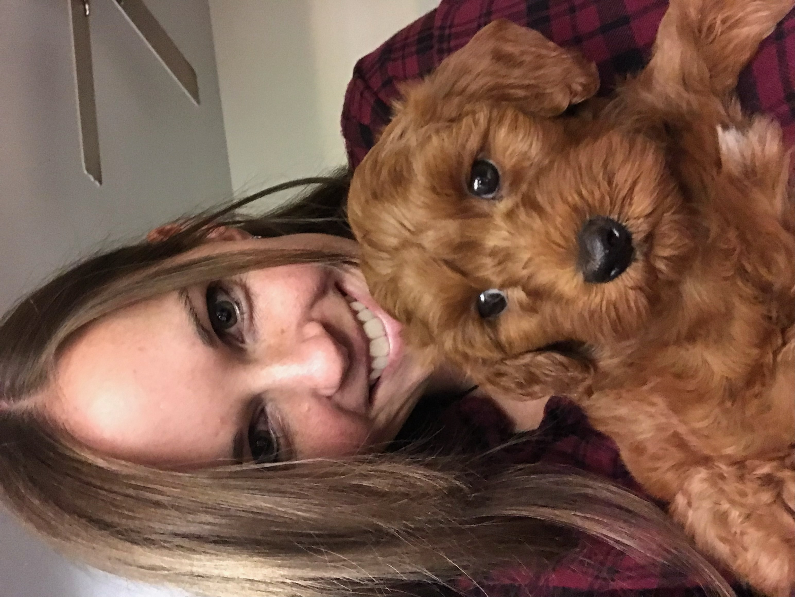

Rachel Baldwin
Objective
As a creative and versatile artist, I am seeking to leverage 10 years of experience in the art and design industry to take on new challenges and create compelling visual web experiences for clients and audiences.
Education
Utah Valley University
- Bachelor of Arts in Art and Visual Communications
- Associates in University Studies
Work Experience
Freelance Illustrator & Animator
- Collaborated with clients to develop visual concepts and ideas that meet their specific needs
- Create storyboards, sketches, and concept art to communicate and refine ideas
- Stayed up-to-date with the latest illustration and animation software and techniques to produce high-quality work
Graphic artist
- Work closely with clients to understand their design requirements and develop effective solutions
- Utilize a range of software programs to create visual content such as logos, posters, and marketing materials
- Manage multiple projects simultaneously, prioritizing tasks to meet deadlines and client expectations
Freelance Animator
- Worked with clients to determine the scope of the project, including animation style, timelines, and deliverables
- Utilized knowledge of traditional animation principles to create high-quality animations using Flash software
- Collaborated with sound designers and voice actors to bring characters to life through movement and sound
Skills
- Front-end Coding (HTML, CSS, JavaScript), GitHub, Responsive Design, Improved User Experience, Back-end Web Programming Languages (PHP, Java, Phython), Writing Functional Code, Search Engine Optimization, Making sites movile-friendly, UX and UI Design, Visual and Interactive Web Elements, Programming Frameworks, Saving Time with Angular and React, Testing, Debugging, Patient, Persistent, Creative Problem Solving, Attention to Detail, using Content Management Systems, Open to Critiques, Strong Communication and Interpersonal skills.
Contact Me
